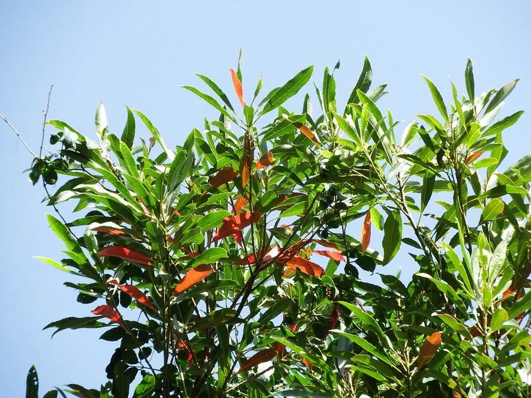

乔木 · 植物界
杜英 Elaeocarpus decipiens

中国南方常见的常绿乔木，叶片在落叶前先变红，形成“万绿丛中一点红”的景观，是优良的园林树种。
- 分类
- 门被子植物门纲木兰纲目酢浆草目科杜英科属杜英属
- 栖息环境
- 海拔 1000 米以下的丘陵、山谷与庭院，喜温暖湿润和充足光照
- 地理分布
- 中国长江流域以南及华南、西南地区，日本、越南也有分布
- 保护级别
- 暂无评估；中国未列入国家重点保护野生植物名录
物种志
杜英为常绿乔木，高可达 20 m，树皮灰褐色；叶片互生，披针形或倒披针形，边缘具浅锯齿，革质，绿色，秋冬季部分老叶在脱落前转为鲜红色，形成独特的“红叶点缀绿冠”景观。花期 6–7 月，总状花序腋生，花白色，花瓣先端撕裂状，下垂如流苏；核果椭圆形，成熟时黑色。
杜英分布于中国长江流域以南及华南、西南地区，也见于日本、越南，喜温暖湿润、光照充足，适宜深厚肥沃、排水良好的酸性土壤。因四季常绿、老叶变红、树形优美，是南方城市与庭园中常见的观赏树种；木材可供建筑、家具与细木工用；树皮纤维可制绳；种子可榨油。杜英落叶期老叶变红、新叶同时萌发，形成新老叶色交替的独特景观。
形态与习性
- 株高可达 20 m，树皮灰褐色
- 花期6–7 月，花白色、花瓣流苏状
- 果期10–12 月，核果成熟时黑色
- 光照喜光，也耐半阴
- 水分喜湿润，怕积水
- 土壤深厚肥沃的酸性壤土
- 主要用途园林观赏、建筑与家具用材、树皮纤维制绳
趣味知识
- 杜英的老叶在落叶前会变成鲜红色，因此常被称作“万绿丛中一点红”。
- 杜英的花瓣先端呈流苏状撕裂，白色小花下垂，像一排小铃铛。
- 杜英四季常绿又带红叶，是南方城市绿化的优良观赏乔木。
- 杜英与杜英科许多植物一样，靠鸟类取食果实来传播种子。